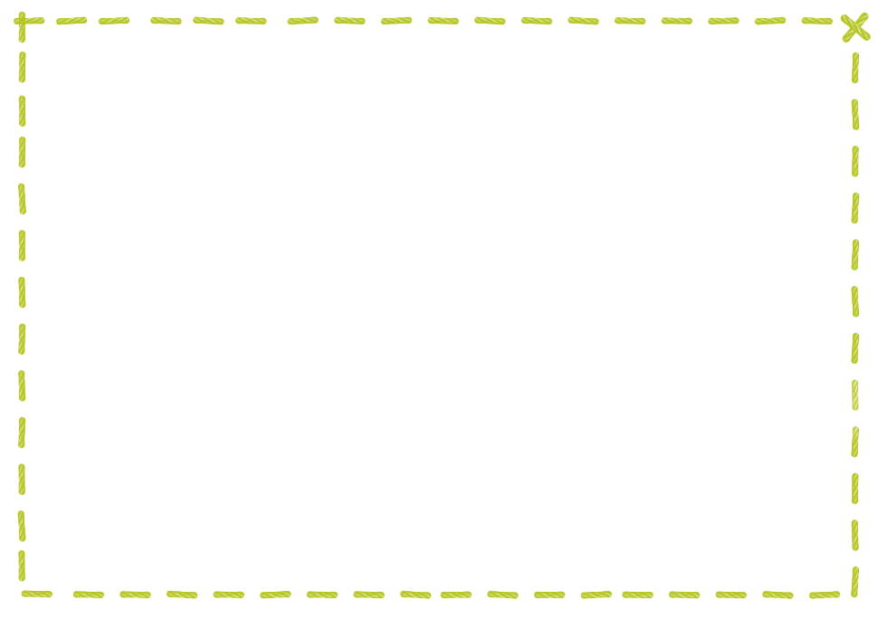
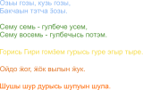

Одӥг купец кема кӧлылэм. Ичигес кӧлыны шедьтэ ке, ымзэ вись пасьта усьяса вушйылэ, пе, вал. Тӥни солы нунал вакчи потэ вылэм. Медоосыз вань дыръя, нунал солы уката но вакчигес потылэм. Огпол со нуналскын быдэс корка пуктыны малпам. Соин ик нунал кузёмытӥсез утчаны кошкем. Лумбыт ветлэм, нуналэз кузь карыны быгатӥсъ муртэ шедьтымтэ. Куинетӥ нуналаз гинэ Лӧпшо Педунь доры учырам. — Ма кулэ-ай, ваше степенство? Ма муген мон доры вуиды? — юам Лӧпшо Педуны. — Муг таӵе. Мыным нунал туж вакчи потэ. Ужасьёсты медъясько но, соос тыро-быдо ужасa уг вутто, нош коньдон соослы тыр, вӧзaз ик сюд на. Нуналэз кузёмытыны быгатӥсъ муртэ утчасa ветлӥсько — уг шедьтӥськы. Оло тон быгатӥськод шуыса юаны лыктӥ. — Э-э, хе-хе-хе! Шумпотэ, ваше степенство, тӥ ӵапак сыӵе быгатӥсь мурт доры учыраллям, — капчи мылкыдын серектэм Лӧпшо Педуны, нош ас понназ малпам: «Шедиз, лэся, ки улам. Мон тае дышето-ай». — Мон тодӥсько, тодӥсько, кызьы нуналэз кузь карыны, — верам со. — Дас пуд пызь сётод ке, верало. Мон чик но ӧй курысал но, сотэк эмыз-юмыз уз луы. — Ма, дас пуд пызьме но уг жаля, ӝоггес вера гинэ. — Нуналэз тани кызьы кузь кароно, — лад-лад валэктэм Лӧпшо Педунь. — Шунытгес дэрем, пенжак, со вылэ тулуп дӥся, пыдад гын сапег пон, нош йырад шуныт изьыдэ изьыя. Саник кут но, ӝужытгес кызьпу йылэ тубыса, шундыез бышкалтыса возь. Валад-а? — Валай, валай. Та визь-кенешед понна туж тау. Празднике куное лыкты, ачим тонэ туж ӟеч утялто. Купец гуртаз бертэм но, кышноез вӧзы пуксьыса, э-э, маде ук, маде ук, пе, кызьы со нуналэз кузь карыны дышиз. Пӧсь гужем, самой кузь нуналэ, со корка лэсьтыны калыкез ӧтем. Ачиз ӵукна ик шуныт дэрем, пенжак, тулуп дӥсям, пыдаз гын сапег понэм, ӥыраз шуныт изьы изьыям но, кияз кузь саник кутыса, самой ӝужытаз кызьпуэ тубем. Ӧтем адямиос ужало но ужало, нош купец шундыез саникен «бышкалтыса» возе. Тани со суть-суть пӧсяз ни, вылтыртӥз ву вия. Киосыз тордӥзы. Адямиос дугдылытэк ужало. Нош купец ужаны ӧтьыкуз соослы верам вылэм: «Мон кызьпуысь васькемлэсь азьло ужамысь эн дугдэ». Кызьпу йылын улыса, солы нунал кузьлэсь но кузь потэм ини. Та дырозь кузь нуналэз со адӟылымтэ на. Нуназе соку гинэ ортчем-ай, нош купец мунчое пырем выллем котмем ини. Суйёсыз тыпы нушыен тышкам кадь пумиллям. Чидaмтэ ни, кызьпуысь васькeм. — Ну, бускельёс, туннэ туж кема ужады ни, тырмоз, — шуэм со, ваньзэ ӟеч сюдыса лэзем. Адямиос, мазэ-созэ валатэк, каньыл мылкыдын бертӥллям. Озьы купец нуналэз кузёмытэм. Лӧпшо Педуньлы дас пуд пызь сётэм, зол куноятыса келям.
Одному купцу коротким показался летний день: солнце встает поздно и заходит рано. А как пришла пора батраков нанимать, купец совсем расстроился: день для него как мгновение ока стал. Сокрушается купец, что не успеют батраки в поле выйти, как настает пора обратно возвращаться. Так им никогда всей работы не переделать. Пришел он к Лопшо Педуню. — Что за нужда привела тебя ко мне, бускель? — спросил купца Педунь. — Да вот, день очень короток. Работники до поля не успевают дойти — глянь, вечер настает, расплачиваться же приходится с ними сполна, да и кормить, как подрядились. Вздумалось мне день удлинить, только никак не сыщу того, кто помог бы мне в этом. Пришел к тебе спросить, не знаешь ли кого, кто умеет день длиннее сделать. — Э-э, агай, и как это тебе посчастливилось именно на такого человека набрести? — не без удовольствия сказал Лопшо Педунь, подумав про себя, что настал черед проучить жадюгу. — Дашь пять пудов муки — помогу тебе. — И десяти пудов не жалко, только научи поскорее. — Слушай, уром, как беде твоей помочь и день длиннее сделать, — начал растолковывать Лопшо Педунь. — Надень на себя потеплее рубашку, пиджак, поверх всего — тулуп, на ноги — валенки, а на голову — малахай из овчины. Возьми в руки вилы, заберись на березу повыше и удерживай солнце вилами, чтоб оно на месте стояло. Понял ли? — Понял, понял, все понял. Большое спасибо за добрый совет. В гости приходи, я сам тебя потчевать буду. Вернулся купец домой и похвастался перед женой своей изворотливостью. Что, дескать, узнал-таки, как солнце удерживать, чтобы по небу не быстро бегало. Лето в тот год стояло жаркое. Нанял купец плотников, чтоб они одним днем дом поставили. А сам с вечера начал собираться. Надел теплую рубаашку, пиджак, тулуп, обул валенки, а чтоб голове теплее было, надел меховую шапку. Для рук додумался еще прихватить овчинные рукавицы. Взял купец в руки самые длинные сенные вилы и, не дожидаясь восхода солнца, забрался на самую высокую березу. Плотникам же наказал работать как подрядились — целый день. Сидит купец чуть не на верхушке березы, ни одна веточка тени ему не дает — и вилами солнышко придерживает. От зноя пот у него по спине ручьями бежит, руки совсем одеревенели, подрагивать начали. А батраки трудятся без передышки, топорами постукивают, пилами позванивают. Время от времени на купца поглядывают, усмехаясь. Купец строго наказал не останавливаться, пока он с березы не спустится. Свою жену к ним приставил, чтобы догладывала за работниками. Жарится купец на березе под солнышком, от усталости того и гляди на землю брякнется. И уж очень длинным день ему кажется. Пожалуй, и не помнит он на своем веку такого длиннющего дня. К полудню купец как в парной бане пропарился, устал, будто на нем целый день пашню пахали и кнутом хлестали. Слез он с березы. — Ну, работнички, спасибо, сегодня славно поработали, довольно уж, — говорит. А батраки рады-радехоньки: совсем не устали, всего полдня на купца проработали. Пошли они по домам, довольные. Вот так жадный купец день удлинил. За это он Лопшо Педуню десять пудов муки отдал и еще угостил на славу.